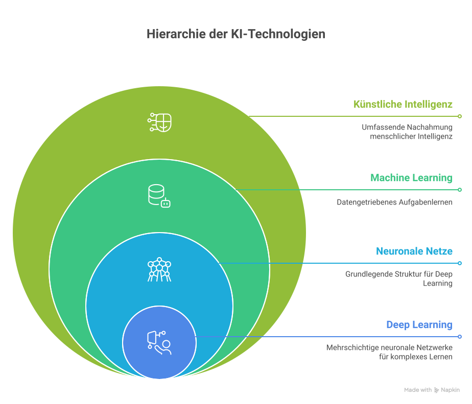

Was ist Künstliche Intelligenz? Was ist Intelligenz überhaupt? Und worin unterscheidet sich der Mensch aus ethischer Perspektive von einer KI?
KI-Einsatzszenarien im Alltag
Künstliche Intelligenz begegnet uns längst überall - im Smartphone, beim Streaming, im Auto, in Suchergebnissen, in der Werbung. Den meisten Menschen ist das gar nicht bewusst. Der Workshop beginnt deshalb mit der Frage: Wo bist du heute schon einer KI begegnet?
Wichtig: KI ist kein einheitliches Phänomen. Wir unterscheiden in der Praxis zwischen schwacher KI (spezialisiert auf eine Aufgabe) und der theoretischen Vision einer starken KI (allgemein-intelligent wie der Mensch). Heute existiert nur schwache KI.
Was ist KI?
"Das erste, was jeder über KI wissen muss: Es gibt keine einheitliche Definition." (vgl. Modul 1, ENARIS)
Eine pragmatische Annäherung: KI ist der Versuch, mit Computern Aufgaben zu lösen, für die Menschen Intelligenz benötigen - z.B. Sprache verstehen, Bilder erkennen, Entscheidungen treffen, Muster finden, Texte erzeugen.
Drei Dimensionen, die immer mitschwingen
Daten - Womit wurde die KI trainiert?
Algorithmen - Welche Regeln und Lernverfahren stecken dahinter?
Modelle - Welches Verhalten zeigt das System nach dem Training?
„KI ist sehr gut darin, die Welt zu beschreiben, so wie sie heute ist - mit all ihren Vorurteilen. Aber KI weiß nicht, wie die Welt sein sollte."

Schaubild · Was ist KI? - visuelle Übersicht
Wie künstliche Intelligenz funktioniert
Drei kurze Erklärvideos und ein vertiefender Artikel - geeignet als Einstieg, im Plenum oder zur eigenen Vorbereitung.
Bevor wir über künstliche Intelligenz sprechen, müssen wir klären, was Intelligenz eigentlich heißt. Auch hier gibt es keine einzige Definition - aber Bausteine:
Probleme lösen können, auch in neuen Situationen
Aus Erfahrungen lernen
Sprache und Symbole verstehen und nutzen
Kreativ Neues schaffen
Empathie, soziale Intelligenz, Selbstreflexion
Werte abwägen, ethisch entscheiden
Eine moderne KI kann manche dieser Bausteine erstaunlich gut imitieren - aber verstehen tut sie nicht. Sie rechnet Wahrscheinlichkeiten.
Mensch & KI - die ethische Perspektive
Worin unterscheidet sich der Mensch aus ethischer Sicht von einer KI?
Der Mensch …
hat ein Bewusstsein und eine Würde
trägt moralische Verantwortung
kann Werte priorisieren und Konflikte abwägen
fühlt mit (Empathie)
kann Sinn stiften und Bedeutung erleben
Eine KI …
imitiert Sprache und Verhalten - ohne Bewusstsein
trägt keine eigene Verantwortung (die liegt bei den Entwickler:innen und Anwender:innen)
"kennt" Werte nur als statistische Muster aus Trainingsdaten
kennt keine Emotionen - simuliert sie höchstens
kann keine Bedeutung erfahren, nur Token vorhersagen
Konsequenz: Verantwortung kann nie an eine KI delegiert werden. Wer KI einsetzt, bleibt verantwortlich.
Niveaudifferenzierte Übungen für fünf Zielgruppen. Die Tabs schalten zwischen Lehrenden- und Lernenden-Perspektive um. Prompts können direkt kopiert werden.
💡 Workshop 01 - Lernideen
Wähle deine Zielgruppe.
🤖 KI-Detektive: Wo steckt KI in unserem Tag?
Niveau 1⏱ 45 Min🛠 KI-Blick + Wortwolke
Die Klasse geht auf "KI-Spurensuche" durch den Schultag. Mit KI-Blick wird Bilderkennung anschaulich.
Bildkarten zu Alltagssituationen sortieren ("Hier ist KI" / "Hier nicht").
KI-Blick mit Klassenmaskottchen oder Lieblingsobjekt ausprobieren.
Gemeinsame Wortwolke erstellen: "Wo habe ich heute KI getroffen?"
Du bist eine freundliche Lernhilfe für Kinder im Grundschulalter (Klasse 3-4). Erkläre in einfachen Worten und mit drei Alltagsbeispielen, was Künstliche Intelligenz ist. Vermeide Fachbegriffe. Ende mit einer Quizfrage, die ich der Klasse stellen kann.
Reflexion: Was kann eine KI gut? Was kann nur ein Mensch?
📖 Karl & Kim begegnen einer KI
Niveau 1⏱ 60 Min🛠 Bilderbuch + Bildgenerator (Lehrkraft)
Anknüpfend an die Bilderbuchreihe "Karl und Kim" (KI-Führerschein) wird eine kurze Folge-Geschichte erfunden.
Geschichte vorlesen, Vorwissen aktivieren.
Klasse erzählt eine Mini-Folge weiter (mündlich oder Bildimpuls).
Lehrkraft generiert ein passendes Bild mit einem Bildgenerator und zeigt es.
Bild: Zwei freundliche Kinderbuchfiguren namens Karl und Kim sitzen zusammen vor einem Tablet. Aus dem Tablet kommen freundliche, bunte Lichtwellen, die Buchstaben und kleine Symbole formen. Stil: warme Aquarellfarben, Bilderbuch-Look, kindgerecht, ohne Text.
Reflexion: Hat die KI verstanden, was wir wollten? Was war anders als erwartet?
🧠 Mensch oder Maschine? - das Klassenrätsel
Niveau 1⏱ 30 Min🛠 Stift & Papier + Lehrer-KI
Die Lehrkraft erstellt mit KI fünf kurze Texte (Witz, Gedicht, Beschreibung). Die Kinder raten: Wer hat das geschrieben?
Erstelle fünf sehr kurze Texte (max. 3 Sätze) zum Thema „mein Lieblingstier" auf Grundschulniveau. Ein Text soll absichtlich künstlich-steif klingen, einer wie ein begeistertes Kind, einer wie ein Sachbuch, einer wie ein Reim, einer wie eine Maschine, die Wörter falsch verkettet. Nummeriere sie. Verrate am Ende NICHT, welcher Text wie kategorisiert wurde.
Reflexion: Woran erkennen wir KI-Texte? Was macht einen Text „menschlich"?
🔍 KI-Audit des Smartphones
Niveau 2⏱ 60 Min🛠 ChatGPT / Copilot + eigene Apps
Schüler:innen erstellen eine Liste der Apps auf ihrem Smartphone und prüfen, wo KI mitarbeitet.
Top-10-Apps der Klasse sammeln.
Für jede App: Welche KI-Funktion vermuten wir? Womit wird trainiert?
Mit dem Prompt unten überprüfen lassen, kritisch hinterfragen.
Du bist Lehrer:in für Medienbildung in Klasse 7. Ich nenne dir eine App. Erkläre in maximal 80 Wörtern: 1) Welche KI-Funktion steckt darin, 2) womit wurde sie wahrscheinlich trainiert, 3) welche Daten sammelt sie über mich. Sei kritisch und ehrlich, auch wenn du dir nicht sicher bist - dann sag das.
App: [HIER APP-NAME EINSETZEN]
Reflexion: Welche App überrascht euch? Welche würdet ihr nach dem Audit deinstallieren?
🎭 Rollendebatte: „Brauchen wir KI?"
Niveau 2⏱ 90 Min🛠 ChatGPT als Vorbereitung
Drei Gruppen vertreten Pro, Contra und neutrale Moderation. KI hilft beim Argumente-Sammeln.
Du bist mein:e Sparringspartner:in für eine Klassendebatte (Sek I, Klasse 8). Liefere mir je 5 starke Argumente für und 5 starke Argumente gegen den intensiven Einsatz von Künstlicher Intelligenz im Alltag von Jugendlichen. Sortiere die Argumente nach „technisch", „sozial", „ethisch", „wirtschaftlich" und „bildungsbezogen". Ergänze pro Argument je ein konkretes Beispiel aus dem Schüler:innen-Alltag.
Reflexion: Welche Argumente kommen so von euch nicht? Wo wirkt die KI einseitig?
🧪 Eigenes KI-Lexikon im Klassenwiki
Niveau 2⏱ Mehrere Stunden🛠 Etherpad / Wiki
Schüler:innen erstellen je einen Lexikoneintrag zu einem KI-Begriff (z.B. Algorithmus, Trainingsdaten, Bias). Die KI dient als Korrekturhilfe.
Verhalte dich wie ein:e Lektor:in. Ich gebe dir gleich einen Lexikoneintrag aus einem Klassenwiki (Sek I) zum Begriff „[BEGRIFF]". Bewerte den Text in drei Punkten: 1) sachlich richtig?, 2) verständlich für Klasse 8?, 3) ein konkretes Beispiel enthalten? Korrigiere NUR fachliche Fehler, ändere meinen Stil nicht. Liste am Ende drei Verbesserungsvorschläge auf.
Mein Eintrag:
[TEXT EINFÜGEN]
Reflexion: Hat die KI den Inhalt verändert oder nur den Ton? Wo bleibt eure Stimme?
📊 KI im Alltag - Recherche- und Visualisierungsprojekt
Niveau 3⏱ 2-3 Doppelstunden🛠 ChatGPT + Tabellenkalkulation
Kurs erstellt eine datengestützte Visualisierung: Wie häufig nutzen Jugendliche KI? Wofür?
Eigene Mini-Umfrage in der Stufe.
Daten in Tabellenkalkulation überführen.
Mit dem Prompt eine Auswertung & Diagrammvorschläge erstellen lassen.
Du bist Datenanalytiker:in für ein Schulprojekt in der Sek II. Ich gebe dir eine kleine, anonyme Umfrage zu KI-Nutzung von Jugendlichen (n=…).
1) Schlage 3 Visualisierungstypen vor und begründe.
2) Identifiziere mögliche Verzerrungen in der Stichprobe.
3) Formuliere 5 Hypothesen, die wir aus den Rohdaten testen könnten.
4) Markiere alles, was statistisch nicht belastbar wäre.
Daten:
[CSV/TABELLE EINFÜGEN]
Reflexion: Welche Hypothesen lassen die Daten wirklich zu? Wo ist die KI zu großzügig?
⚖️ Mensch vs. KI: Ein philosophischer Essay mit KI
Niveau 3⏱ 90 Min🛠 ChatGPT als Sparringspartner
Schüler:innen schreiben einen Essay zu „Was bleibt menschlich, wenn KI alles kann?" und nutzen die KI als kritische Leser:in.
Verhalte dich wie ein:e strenge:r Philosophie-Tutor:in (Sek II, Leistungskurs). Ich gebe dir gleich meinen Essay zur Frage „Worin unterscheidet sich der Mensch ethisch von einer Künstlichen Intelligenz?".
- Markiere drei Stellen, an denen meine Argumentation logisch nicht trägt.
- Konfrontiere mich mit einem Gegenargument aus der Position eines:r Utilitarist:in.
- Schlage zwei zusätzliche philosophische Bezüge vor (Kant, Habermas, Floridi …).
- Verbessere den Text NICHT - nur Hinweise.
Mein Essay:
[TEXT]
Reflexion: Hat die KI eine eigene Haltung? Oder spiegelt sie nur, was häufig gesagt wird?
🎬 KI im Alltag - Mini-Dokumentation
Niveau 3⏱ Projektwoche🛠 ChatGPT + Schnittsoftware
Kleine Doku (3-5 Min): „Ein Tag mit KI - aus der Sicht eines Jugendlichen". KI hilft bei Drehbuch, Sprecher:innen-Text, Faktencheck.
Du bist Co-Autor:in für eine 4-minütige Schul-Dokumentation. Thema: „Ein Tag mit KI - im Leben einer/eines 17-Jährigen".
1) Erstelle ein Storyboard mit 6 Szenen (Ort, Zeit, KI-Anwendung, Konflikt).
2) Liefere zu jeder Szene einen Sprecher:innen-Text (max. 30 Sek).
3) Markiere offen, welche Aussagen wir vor dem Veröffentlichen faktisch prüfen müssen.
4) Vermeide Klischees, baue eine ambivalente Schlussszene ein.
Reflexion: Was haben wir behalten, was umgeschrieben? Wo war die KI hilfreich, wo bremsend?
🕵️ KI-Detektiv:in - Mein Tag mit KI
Lernidee⏱ 1 Schultag🛠 Tagebuch + ChatGPT
Du beobachtest einen Tag lang: Wo begegnest du KI? Am Abend besprichst du deine Liste mit einer KI.
Hi! Ich bin Schüler:in (Klasse 7) und habe heute eine Liste gemacht, wo ich KI begegnet bin. Schau dir meine Liste an und sag mir:
1) Welche der Sachen sind WIRKLICH KI?
2) Welche habe ich vielleicht falsch eingeschätzt?
3) Welche zwei spannenden Beispiele habe ich vergessen?
Antworte freundlich und in einfachen Sätzen.
Meine Liste:
[LISTE EINFÜGEN]
Selbst-Check: Welche Antwort der KI hat dich überrascht? Was möchtest du noch herausfinden?
🎤 Mein KI-Steckbrief
Lernidee⏱ 30 Min🛠 ChatGPT
Stelle einer KI 5 Fragen zu sich selbst und mache daraus einen „KI-Steckbrief".
Bitte beantworte mir, einer Schülerin / einem Schüler in der 7. Klasse, fünf Fragen über dich:
1) Was bist du genau?
2) Wer hat dich gemacht?
3) Womit wurdest du trainiert?
4) Was kannst du gut, was nicht?
5) Was darf ich dir NICHT erzählen?
Antworte in einfachen Worten, je 2-3 Sätze.
Selbst-Check: Welche Antwort hat dich erstaunt? Glaubst du der KI alles?
🧭 Selbst-Audit: Wann nutze ich KI verantwortungsvoll?
Lernidee⏱ 45 Min🛠 ChatGPT
Erstelle dein persönliches „KI-Manifest" und lass es von einer KI hinterfragen.
Ich bin Schüler:in in der Sek II und habe gerade ein persönliches „KI-Manifest" mit 5 Regeln zu meinem KI-Nutzungsverhalten geschrieben. Übernimm die Rolle einer kritischen Mitschülerin / eines kritischen Mitschülers und prüfe meine Regeln.
- Welche Regel ist zu vage?
- Welche ist nicht durchhaltbar?
- Welche fehlende Regel würdest du ergänzen?
- Wo widersprichst du meinem Manifest?
Sei direkt, aber respektvoll.
Mein Manifest:
[REGELN EINFÜGEN]
Selbst-Check: Welche Regel überarbeitest du - und warum?
Baue eine Mini-KI-Assistenz für ein Alltagsproblem (z.B. „Lerncoach für Mathe", „Fitnessbuddy"). Du gestaltest System-Prompt und Verhalten.
Hilf mir beim Schreiben eines System-Prompts für meine eigene KI-Assistenz.
- Zielgruppe: Jugendliche (16-19)
- Aufgabe der Assistenz: [HIER NENNEN]
- Stil: motivierend, niemals herablassend
- Verbotene Themen: [LISTE]
- Pflichthinweise: KI ist kein Ersatz für Fachpersonen.
Strukturiere den System-Prompt klar in den Abschnitten: Rolle, Ziel, Stil, Grenzen, Beispieldialog.
Selbst-Check: Wo verlässt deine KI die definierte Rolle? Wie reagierst du?